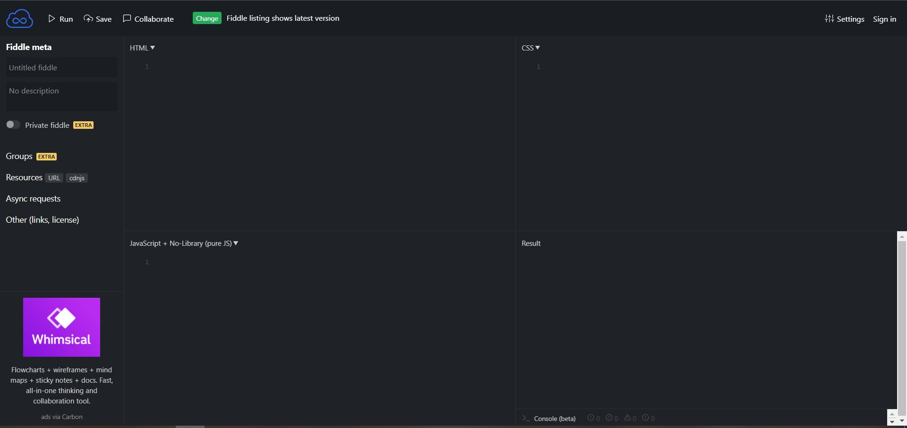

Nous allons nous intéresser à un acteur fondamental du développement web, le couple HTML+CSS (Hyper Text Markup Langage et Cascading Style Sheets). Dans un premier temps, nous allons exclusivement nous intéresser au HTML.
Voici la définition que nous en donne Wikipedia : L'Hypertext Markup Language, généralement abrégé HTML, est le format de données conçu pour représenter les pages web. C’est un langage de balisage permettant d’écrire de l’hypertexte, d’où son nom. HTML permet également de structurer sémantiquement et de mettre en forme le contenu des pages, d’inclure des ressources multimédias, dont des images, des formulaires de saisie, et des programmes informatiques. Il permet de créer des documents interopérables avec des équipements très variés de manière conforme aux exigences de l’accessibilité du web. Il est souvent utilisé conjointement avec des langages de programmation (JavaScript) et des formats de présentation (feuilles de style en cascade).
Pour l'instant, nous allons retenir deux éléments de cette définition "conçu pour représenter les pages web" et "un langage de balisage".
Grâce au HTML vous allez pouvoir, dans votre navigateur (Firefox, Chrome, Opera,....), afficher du texte, afficher des images, proposer des hyperliens (liens vers d'autres pages web), afficher des formulaires et même maintenant afficher des vidéos (grâce à la dernière version du HTML, l'HTML5).
HTML n'est pas un langage de programmation (comme le Python par exemple), ici, pas question de conditions, de boucles....c'est un langage de description.
Pour aborder le HTML, nous allons, dans un premier temps utiliser le site jsfiddle.Vous devriez voir apparaître ceci :
Nous allons pour l'instant uniquement utiliser la fenêtre "HTML" et la fenêtre "Result".
. . . . . . . . . . . . . . . . . . . . . . . . . . . . . . . . . . . . . . . . . . . . . . . . . . . . . . . . . . . . . . . . . . . . . . . . . . . . . . . . . . . . . . . . . . . . . . . . . . . . . . . . . . . . . . . . . . . . . . . . . .
Comme déjà évoqué ci-dessus, en HTML tout est une histoire de balises que l'on ouvre et que l'on ferme. Une balise ouvrante est de la forme <nom_de_la_balise>, les balises fermantes sont de la forme </nom_de_la_balise>.
En observant attentivement le code, vous devriez forcément remarquer que toute balise ouverte doit être refermée à un moment ou un autre. La balise ouvrante et la balise fermante peuvent être sur la même ligne ou pas, cela n'a pas d'importance, la seule question à se poser ici est : ai-je bien refermé toutes les balises que j'ai ouvertes ?
Enfin pour terminer avec les généralités sur les balises, il est important de savoir qu'une structure du type :
est interdite, la balise2 a été ouverte après la balise1, elle devra donc être refermée avant la balise1. En revanche, l'enchaînement suivant est correct :
Notez que dans notre exemple de la question question 1 nous respectons bien cette règle "d'imbrication" des balises avec la balise <p> et la balise <strong>.
Il est important de comprendre que chaque balise a une signification qu'il faut bien respecter (on parle de la sémantique des balises). Vous trouverez une liste non exhaustive des balises et de leur sémantique plus bas.
Vous devez aussi savoir qu'il existe des balises qui sont à la fois ouvrantes et fermantes (<balise/>) : un exemple, la balise permettant de sauter une ligne, la balise <br/>
Il est possible d'ajouter des éléments à une balise ouvrante, on parle d'attribut. Une balise peut contenir plusieurs attributs :
Il existe beaucoup d'attributs différents, nous allons nous contenter de 2 exemples avec l'attribut id (id pour identifiant) et class.
. . . . . . . . . . . . . . . . . . . . . . . . . . . . . . . . . . . . . . . . . . . . . . . . . . . . . . . . . . . . . . . . . . . . . . . . . . . . . . . . . . . . . . . . . . . . . . . . . . . . . . . . . . . . . . . . . . . . . . . . . .
Le HTML n'a pas été conçu pour gérer la mise en page (c'est possible, mais c'est une mauvaise pratique). Le HTML s'occupe uniquement du contenu et de la sémantique, pour tout ce qui concerne la mise en page et l'aspect "décoratif" (on parle du "style" de la page), on utilisera le CSS (Cascading Style Sheets).
Dans JSFIDDLE, il est possible d'écrire du CSS dans la fenêtre en haut à droite.
et le code CSS suivant dans la partie CSS:
. . . . . . . . . . . . . . . . . . . . . . . . . . . . . . . . . . . . . . . . . . . . . . . . . . . . . . . . . . . . . . . . . . . . . . . . . . . . . . . . . . . . . . . . . . . . . . . . . . . . . . . . . . . . . . . . . . . . . . . . . .
Dans l'exemple de la question 5, les propriétés "text-align" et "background-color" seront appliquées au contenu de toutes les balises de type h1 (avec respectivement les valeurs "center" et "red").....
et le code CSS suivant dans la partie CSS:
. . . . . . . . . . . . . . . . . . . . . . . . . . . . . . . . . . . . . . . . . . . . . . . . . . . . . . . . . . . . . . . . . . . . . . . . . . . . . . . . . . . . . . . . . . . . . . . . . . . . . . . . . . . . . . . . . . . . . . . . . .
Il est donc possible de cibler un paragraphe et pas un autre en utilisant l'id du paragraphe (en CSS l'id se traduisant par le signe #).
Il est aussi possible d'utiliser l'attribut class à la place de l'id. Dans le CSS on utilisera le point . à la place du #.
L'unique différence entre id et class est que l'id ne cible qu'un seul élément alors que la class permet de cibler plusieurs éléments d'une même page.
Ainsi, si nous avions eu un 3e paragraphe, nous aurions pu avoir :
Mais nous n'aurions pas pu avoir :
car l'id para_1 a déjà été utilisé pour le 1er paragraphe.
JSFIDDLE est un très bel outil, mais il ne peut pas être utilisé pour la réalisation d'une vraie page web.
Nous allons créer 2 fichiers : un fichier qui contiendra du HTML (index.html) et un fichier qui contiendra du CSS (style.css).
Dans le code de la question 11, vous reconnaissez le code se trouvant entre les balises <body> :
Tout votre code HTML devra se trouver entre ces 2 balises.Le reste des balises devraient vous êtes inconnues. Passons-les en revue :La première ligne :
permet d'indiquer au navigateur que nous utiliserons la dernière version du HTML.
La balise <html> est obligatoire, l'attribut lang="fr" permet d'indiquer au navigateur que nous utiliserons le français pour écrire notre page.
Les balises <head>...</head> délimitent ce que l'on appelle l'en-tête. L'en-tête contient, dans notre exemple, 2 balises : la balise <meta charset="utf-8> qui permet de définir l'encodage des caractères (plus d'informations en première NSI) et la balise <title> qui définit le titre de la page (attention ce titre ne s'affiche pas dans le navigateur, ne pas confondre avec la balise <h1>).
Pour l'instant notre CSS ne sera pas appliqué à notre page, pour ce faire, il faut modifier notre code HTML en ajoutant une ligne qui va permettre d'associer notre code CSS à notre page.
Dans l'exemple que nous venons de voir, les fichiers "index.html" et "style.css" se trouvent dans le même dossier. Il est souvent utile de placer les fichiers CSS dans un dossier "CSS". Il faudra alors modifier le code HTML en conséquence :
| Balise | Effet |
| p | paragraphe |
| b | texte en gras |
| i | texte en itallique |
| h1 | titre de niveau 1 |
| ... | ... |
| h6 | titre de niveau 6 |
| Balise | Effet |
| /br | Retour à la ligne |
| /hr | Ligne de séparation horizontale |
La balise img est auto fermante, elle permet bien évidemment d'insérer une image. Elle possède deux attributs :
La balise permettant de créer des liens hypertextes est la balise a, ce sont ces liens hypertextes qui permettent de passer d'une page à une autre.
L'attribut href a pour valeur le chemin jusqu'à la page.
La phrase placée entre la balise ouvrante et la fermante défini la zone cliquable permettant accéder au lien dans href.
Les listesIl existe deux types de listes :
Les formulaires permettent à l'utilisateur de transmettre des informations. Un formulaire devra être délimité par des balises form: